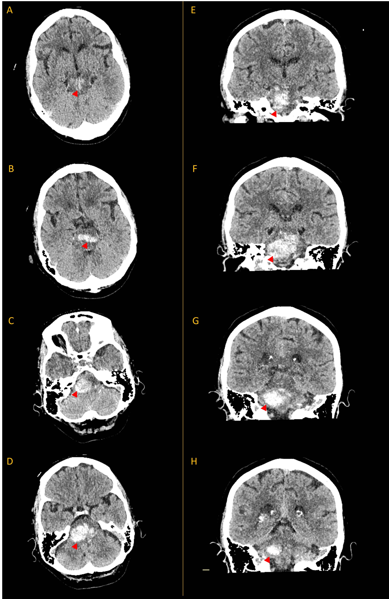

Case 23 - Weakness and abnormal eye movements
Outcome
A CT was performed, showing a large pontine haemorrhage, centred towards the right side of the pons and extending upwards towards the midbrain.
In the images below, the left column shows axial CT images descending from midbrain to pons (A-D), while the right column shows coronal images, anterior (E) to posterior (H). Blood is seen as a bright substance, marked by the red arrowheads.

The patient was discussed with the on-call neurosurgery team. Unfortunately there was no surgical option possible to treat this - the blood was intraparenchymal rather than in the ventricle or in the space surrounding the cerebellum, both of which can sometimes be addressed surgically.
She was taken to the intensive care unit and ventilated for 24 hours in addition to receiving aggressive blood-pressure lowering with intravenous beta blockers and nitrates.
The next day she was reviewed after several hours with sedation paused. The examination found the following signs:
While the patient did not satisfy formal criteria for death by neurological criteria (sometimes referred to as 'brainstem death'), it was felt that this haemorrhage had caused overwhelming neurological damage and was unsurvivable. The team discussed her condition with her relatives who were clear that the patient would not wish to be kept alive in the event of such an illness. The team made the decision to withdraw life-support and the patient passed away that afternoon with her family present.
Sudden-onset left hemiplegia and UMN facial weakness with right abducens palsy due to a right pontine haemorrhage, followed by coma then development of severe brainstem damage, with a fatal outcome.